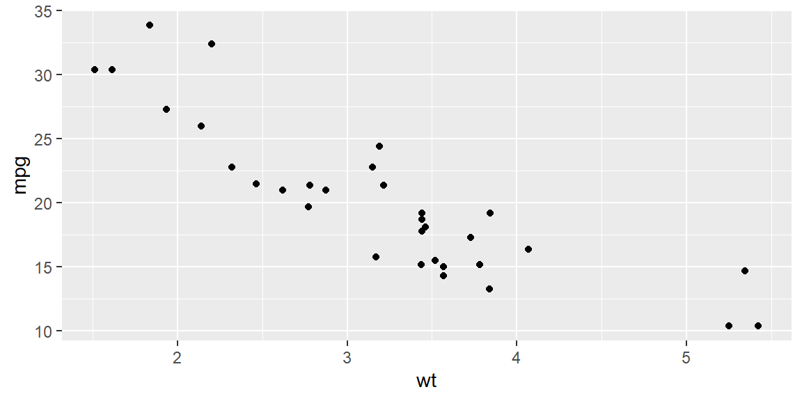
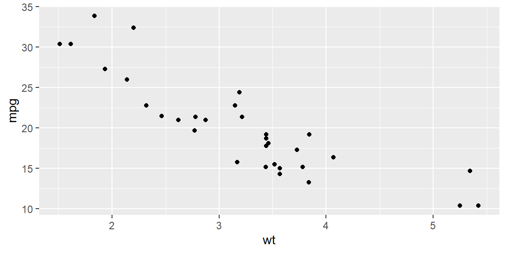
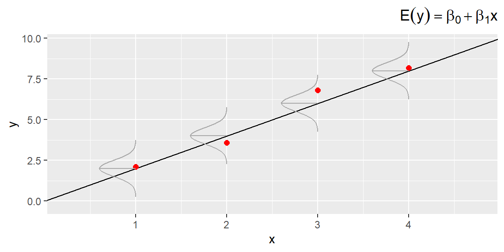

library(tidyverse)
data("mtcars")
mtcars |>
ggplot(aes(x = wt, y = mpg)) +
geom_point()
“The most important questions of life are, for the most part, really only problems of probability.” - Pierre Simon, Marquis de Laplace
In the simple linear regression model \[\begin{align*} y = \beta_0 + \beta_1 x +\varepsilon \end{align*}\] we have previously discussed how to estimate \(\beta_0\) and \(\beta_1\) with sample data using the least squares estimators. Below is an example of finding the least squares estimates with R.
Example 3.1 (The mtcars dataset) The mtcars data was extracted from the 1974 Motor Trend US magazine, and comprises fuel consumption and 10 aspects of automobile design and performance for 32 automobiles (1973–74 models).
We first will make a scatterplot of mpg versus wt.
library(tidyverse)
data("mtcars")
mtcars |>
ggplot(aes(x = wt, y = mpg)) +
geom_point()
We see a linear relationship makes sense for modeling mpg based on wt.
Let’s find the least squares estimates using the lm() function in R. Note that in this function, the model is specified with a formula. We specify the formula with the response variable, followed by a ~, then the predictor variables. Here, we only have one predictor variable (wt).
library(tidyverse)
fit = lm(mpg~wt, data = mtcars)
fit
Call:
lm(formula = mpg ~ wt, data = mtcars)
Coefficients:
(Intercept) wt
37.285 -5.344 The fitted line (or prediction equation): \[\begin{align*} \hat{y} = 37.285 - 5.344 x \end{align*}\]
Note that the least squares estimators are linear functions of the observations \(y_{1},\ldots,y_{n}\). That is, both \(b_0\) and \(b_1\) can be written as a linear combination of the \(y\)’s.
Since \(y\) is the variable that we want to model, we call an estimator for some parameter that takes the form of a linear combination of \(y\) a linear estimator.
We can express \(b_1\) as \[ \begin{align} b_1 & =\sum k_{i}y_{i} \end{align} \tag{3.1}\] where \[\begin{align*} k_{i} & =\frac{x_{i}-\bar{x}}{\sum \left(x_{i}-\bar{x}\right)^{2}} \end{align*}\]
We first note that \(\sum\left(x_{i}-\bar{x}\right)=0\).
We now rewrite \(b_1\) as \[\begin{align*} b_1 & =\frac{\sum\left(x_{i}-\bar{x}\right)\left(y_{i}-\bar{y}\right)}{\sum\left(x_{i}-\bar{x}\right)^{2}}\\ & =\frac{\sum\left(x_{i}-\bar{x}\right)y_{i}-\bar{y}\sum\left(x_{i}-\bar{x}\right)}{\sum\left(x_{i}-\bar{x}\right)^{2}}\\ & =\frac{\sum\left(x_{i}-\bar{x}\right)y_{i}}{\sum\left(x_{i}-\bar{x}\right)^{2}}\\ & =\left(\frac{1}{\sum\left(x_{i}-\bar{x}\right)^{2}}\right)\sum\left(x_{i}-\bar{x}\right)y_{i} \end{align*}\]
From Equation 3.1, we see that \(b_1\) is a linear combination of the \(y\)’s since \(k_{i}\) are known constants (recall that \(x_{i}\) are treated as known constants).
We can write \(b_0\) as \[ \begin{align} b_0 & =\sum c_{i}y_{i} \end{align} \tag{3.2}\] where \[\begin{align*} c_{i} & =\frac{1}{n}-\bar{x}k_{i} \end{align*}\]
Therefore, \(b_0\) is a linear combination of \(y_{i}\).
We can rewrite \(b_0\) as \[\begin{align*} b_0 & =\bar{y}-b_{1}\bar{x}\\ & =\frac{1}{n}\sum y_{i}-\bar{x}\sum k_{i}y_{i}\\ & =\sum\left(\frac{1}{n}-\bar{x}k_{i}\right)y_{i} \end{align*}\]
Let’s now focus on the random component \(\varepsilon\) in the probabilistic model and its connection to the errors in estimating \(\beta_0\) and \(\beta_1\).
Specifically, we’ll explore how the probability distribution of \(\varepsilon\) influences the accuracy of the model in representing the true relationship between the dependent variable \(y\) and the independent variable \(x\).
We make four key assumptions about the probability distribution of \(\varepsilon\):
The mean of \(\varepsilon\)’s probability distribution is 0. This means that, on average, the errors cancel out over an infinitely large number of experiments for each value of the independent variable \(x\). Consequently, the mean value of \(y\), \(E(y)\), for a given \(x\) is \(E(y) = \beta_0 + \beta_1 x\).
The variance of \(\varepsilon\)’s probability distribution is constant across all values of the independent variable \(x\). For our linear model, this implies that the variance of \(\varepsilon\) is a constant, say, \(\sigma^2\), regardless of the value of \(x\).
The probability distribution of \(\varepsilon\) is normal.
The errors for different observations are independent. In other words, the error for one value of \(y\) does not influence the errors for other \(y\) values.
The implications of the first three assumptions can be seen in Figure 3.1;, which shows distributions of errors for four particular values of \(x\).

From Figure 3.1, we see that the probability distributions of the errors are normal, with a mean of 0 and a constant variance \(\sigma^2\).
The line in the middle of the curve that goes to the regression line represents the mean value of \(y\) for a given value of \(x\). The line of means is given by the equation: \[ E(y) = \beta_0 + \beta_1 x \]
These assumptions allow us to create measures of reliability for the least squares estimators and to develop hypothesis tests to evaluate the utility of the least squares line.
Various diagnostic techniques are available for checking the validity of these assumptions, and these diagnostics suggest remedies when the assumptions seem invalid.
Therefore, it is crucial to apply these diagnostic tools in every regression analysis. We will discuss these techniques in detail later.
In practice, the assumptions do not need to hold exactly for least squares estimators and test statistics to have the reliability we expect from a regression analysis. The assumptions will be sufficiently satisfied for many real-world applications.
The variability of random error, measured by its variance \(\sigma^2\), plays a crucial role in the accuracy of estimating model parameters \(\beta_0\) and \(\beta_1\), as well as in the precision of predictions when using \(\hat{y}\) to estimate \(y\) for a given value of \(x\). As a result, it is expected that \(\sigma^2\) will appear in the formulas for confidence intervals and test statistics.
In most real-world scenarios, \(\sigma^2\) is unknown and must be estimated using the available data. The best estimate for \(\sigma^2\) is \(s^2\), calculated by dividing the sum of squares of residuals by the associated degrees of freedom (df). The sum of squares of residuals is given by: \[ SSE = \sum \left(y_i - \hat{y}_i\right)^2 \]
In a simple linear regression model, 2 degrees of freedom are used to estimate the y-intercept and slope, leaving \((n - 2)\) degrees of freedom for estimating the error variance. Thus, the estimate of \(\sigma^2\) is: \[ \begin{align*} s^2 &= \frac{SSE}{n-2}\\ &= \frac{\sum \left(y_i - \hat{y}_ i\right)^2}{n-2} \end{align*} \]
This \(s^2\) serves as the basis for further statistical analysis, including the construction of confidence intervals and hypothesis testing.
The value of \(s^2\) is referred to as the mean square error (MSE).
The value \[\begin{align*} s &= \sqrt{s^2} \end{align*}\] is referred to as the standard error of the regression model or as the root MSE (RMSE).
Using the empirical rule, we expect approximately 95% of the observed \(y\) values to lie within \(2s\) of their respective least squares predicted values, \(\hat y\).
Recall the empirical rule applies to distributions that are mound-shaped and symmetric. It state that approximately 68% of the distribution is within one standard deviation of the mean, approximately 95% of the distribution is within two standard deviations of the mean, and approximatley 99.7% of the distribution is withing three standard deviations of the mean. Since we assume \(\varepsilon\) is normally distributed, then the empirical rule holds.
Example 3.2 (Example 3.1 - revisited) We can use the summary() function with the fit from lm to obtain the summary stats of the fit.
fit = lm(mpg~wt, data = mtcars)
fit |> summary()
Call:
lm(formula = mpg ~ wt, data = mtcars)
Residuals:
Min 1Q Median 3Q Max
-4.5432 -2.3647 -0.1252 1.4096 6.8727
Coefficients:
Estimate Std. Error t value Pr(>|t|)
(Intercept) 37.2851 1.8776 19.858 < 2e-16 ***
wt -5.3445 0.5591 -9.559 1.29e-10 ***
---
Signif. codes: 0 '***' 0.001 '**' 0.01 '*' 0.05 '.' 0.1 ' ' 1
Residual standard error: 3.046 on 30 degrees of freedom
Multiple R-squared: 0.7528, Adjusted R-squared: 0.7446
F-statistic: 91.38 on 1 and 30 DF, p-value: 1.294e-10The standard error (RMSE) of the fit is 3.046.
We can obtain the MSE with the following code:
anova(fit)Analysis of Variance Table
Response: mpg
Df Sum Sq Mean Sq F value Pr(>F)
wt 1 847.73 847.73 91.375 1.294e-10 ***
Residuals 30 278.32 9.28
---
Signif. codes: 0 '***' 0.001 '**' 0.01 '*' 0.05 '.' 0.1 ' ' 1The MSE is 9.28.